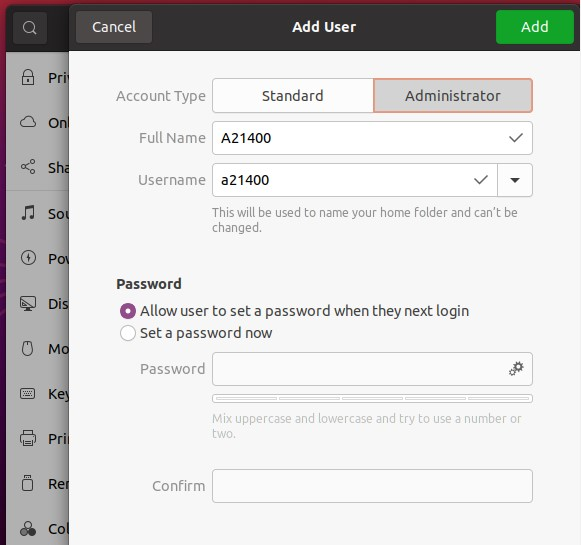

Zadání:
- Vytvořte nového uživatele podle vašeho osobního čísla (A201234). (1 bod)
- Nastavte mu admin práva a přihlaste se na něj. (1 bod)
- Změňte časové pásmo na GMT+X (X je poslední číslice ve vašem osobním čísle). (1 bod)
- Změňte název počítače ve formátu PŘÍJMENÍ-PC. (1 bod)
- Proveďte kontrolu aktuálnosti repozitářů (1 bod)
- Proveďte kontrolu dostupných aktualizací systému (1 bod)
- Přidejte repozitář universe
- Z přidaného repozitáře nainstalujte nástroj Gnome Tweak Tool (1 bod)
- Do seznamu repozitářů vložte komentář (řádek označený #) s vašim jménem (1 bod)
- Vytvořte ve své domovské složce (home) zálohu seznamu repozitářů (1 bod)
- Vytvořenou zálohu uložte do archivu tar s metodou komprese gzip (1 bod)
- Vypište seznam všech instalovaných balíčků
- Vypište seznam běžících procesů a uložte jej do souboru .txt s Vašim os. číslem
- Proveďte přizpůsobení ubuntu dle svých preferencích pro:
- a. Prostřdí (KDE, mate, Xfce, budgie, atd.) (2 bod)
- Pozadí (1 bod)
- Barvy (1 bod)
- Ikonu uživatele (1 bod)
- Další dle volby (body dle množství a obtížnosti) (5 bodů)
POZOR: U zadání č. 14. zdokumentujte vzhled:
- před přizpůsobením
- po instalaci nového prostředí (defaultní nastavení)
- po všech provedených změná
1 a 2. Settings -> Users -> add User
